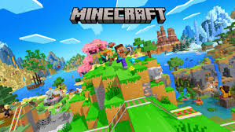

Minecraft es un videojuego de mundo abierto donde los jugadores pueden explorar, construir y sobrevivir en diferentes entornos. Su estilo de bloques lo hace único y permite crear desde casas sencillas hasta enormes ciudades.
Una de las características más populares de Minecraft es la posibilidad de jugar con mods. Estos agregan nuevas criaturas, dimensiones, herramientas y mecánicas que amplían la experiencia original del juego y ofrecen nuevos desafíos.
Modrinth es una plataforma muy utilizada por la comunidad de Minecraft para descargar mods, modpacks, shaders y plugins. Su interfaz es sencilla y permite encontrar contenido compatible con distintas versiones del juego de forma rápida y segura.

Elaborado por Macias Arana Dante 2-I